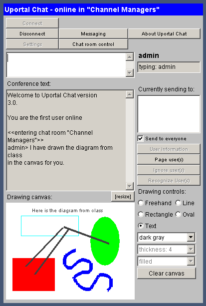

Launching the Chat Channel
To launch the chat window, simply click on the name of the chat room.
- A window will open up. It may take a few moments for the components to load in your environment.
- When the chat application loads successfully, you will be connected to the group chat session. Users and groups who are not assigned to this chat room will not be able to login to this chat session.
- To end the chat session, click the Disconnect button or just close the window.

Chat Features
To communicate in the chat window, simply click within the white box towards the top of the window and type. In order for others to see what you have typed, you must hit ENTER after you're done typing.
All chat participants share the Drawing Canvas. Sometimes pictures work better than words, so here you can draw shapes and figures for others to see (if permissions have been enabled). If the canvas becomes too crowded, simply click the Clear canvas button to wipe the slate clean.
You should notice some of the buttons at the top of the chat window. If any of these buttons are grayed out, that means you either do not have permission to use this feature or it is not possible to do this at this time.
- Messaging - This button lists online users and allows you to send instant private messages to any user on the list.
- Settings - This button allows you to change some basic settings, such as sound notification and canvas availability.
- Chat Room Control - This button allows you to invite, ban, or allow any users into the current chat channel.
- About Uportal Chat - This button gives more information about uPortal Chat.
The following buttons can only be used when you have selected an online user from the Currently Sending to: list on the right side of the window (and in some cases, if permissions have been enabled):
- User Information - Click this button to find out more about any selected user.
- Page User(s) -Click this button to send them an alert message.
- Ignore User(s) - Click this button to ignore users. You will no longer see what they type.
- Recognize User(s) - Click this button to disable the ignore setting on any user you are currently ignoring.
|